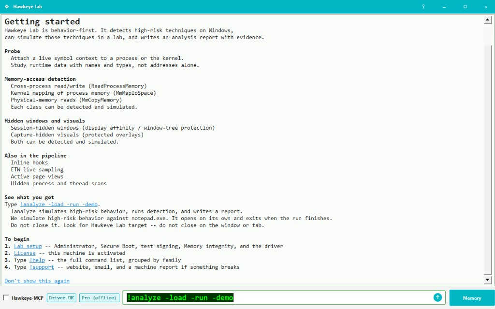
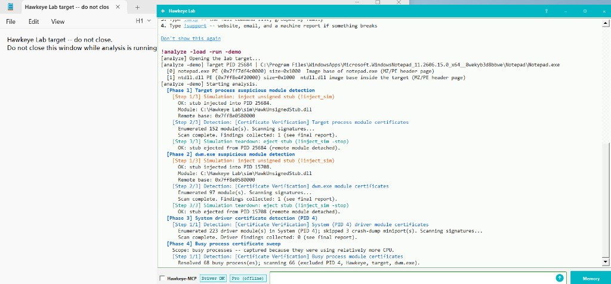
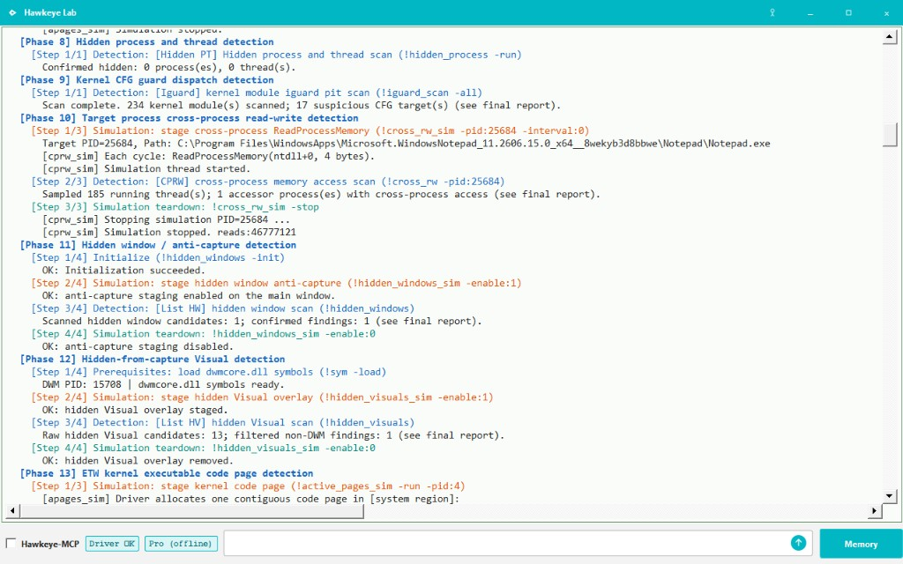
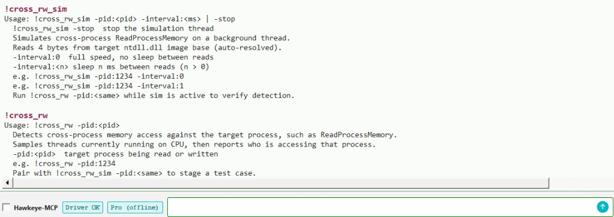
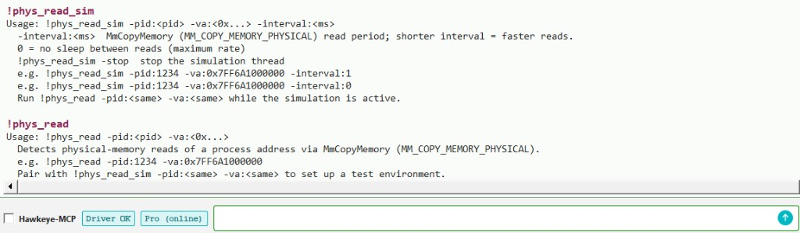
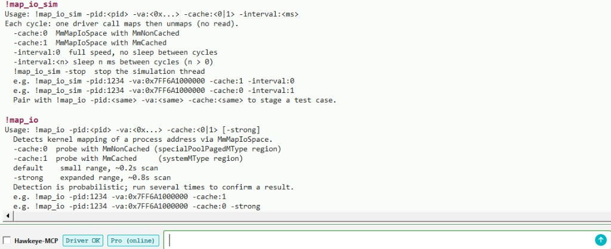
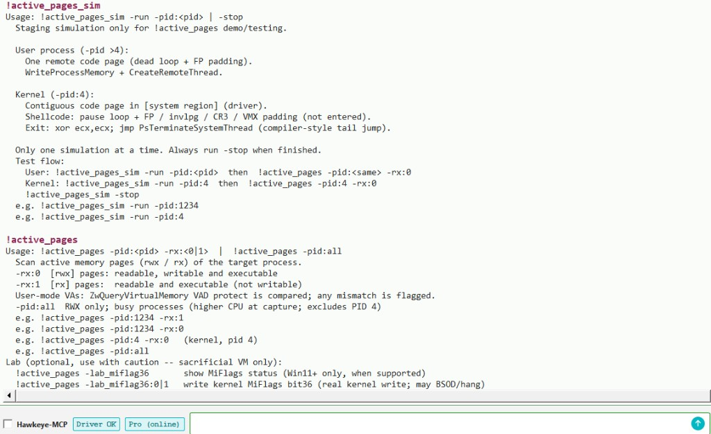
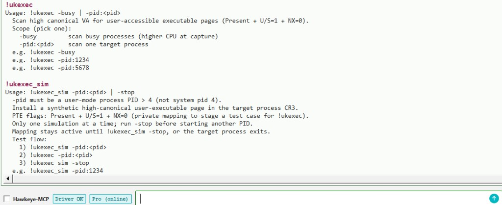
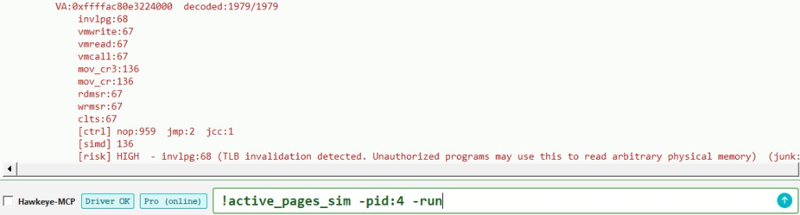
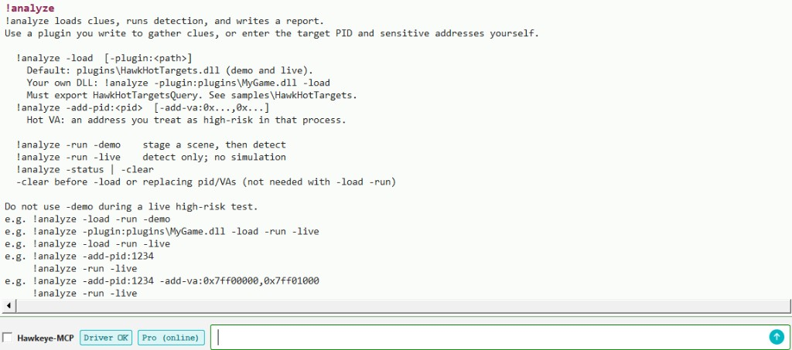

!probe
面向进程的系统化研究入口，提供基于符号的多模块联合分析能力。
Hawkeye Lab · 仿真与检测 · 分析报告
Hawkeye Lab 是在长期游戏安全对抗基础上打造的专业检测评估工具。 它具备高自动化水平；高仿真模拟能力；完善报告输出，并依托自研行为特征库进行评估。让分析流程专业、高效。
注：Hawkeye Lab 不依赖 VT 虚拟化技术。
| 能力 | Community | Lab |
|---|---|---|
实时控制台
!probe、!etw、内存工具
|
✓ | ✓ |
多维度检测能力
高风险检测命令 · !analyze（20 项工作流）
|
— | ✓ |
| 专业分析报告 PDF / 文本 · 自研行为特征库 Assessment | — | ✓ |
游戏外挂行为仿真模拟
Lab -demo staging · 可复现检测场景
|
— | ✓ |
Community：GPL-3.0-or-later · Lab：订阅制（$35 / 月）。
!probe面向进程的系统化研究入口，提供基于符号的多模块联合分析能力。
!etw基于内核 ETW 的 CPU 采样（Sampled Profile）和 Threat-Intelligence ETW 技术，辅助定位和识别外挂本体和行为。
!cross_rw具备基于 KeAttach 技术体系的跨进程内存访问识别能力。
!cross_rw_sim 可模拟此行为。
!phys_read检测识别基于 MmCopyMemory(MM_COPY_MEMORY_PHYSICAL) 技术路线的跨进程内存访问行为。
!phys_read_sim 可模拟此行为。
!map_io检测识别基于 MmMapIoSpace 映射技术的跨进程内存访问行为 (覆盖 MmNonCached 与 MmCached)。
!map_io_sim 可模拟此行为。
!active_pages基于活跃内存页识别技术，能够秒级定位外挂代码。覆盖内核内存、应用层内存。
!active_pages_sim 可进行模拟一个活跃内存页。
!hidden_windows检测基于 DisplayAffinity 技术路线的隐藏窗口。
SetWindowDisplayAffinity
win32kfull!ChangeWindowTreeProtection
!hidden_windows_sim 会隐藏 Hawkeye 自身主窗口，达到模拟效果。
!hidden_visuals检测基于 Visual overlay 的窗口隐藏技术路线绘制行为。
!hidden_visuals_sim
可模拟并创建隐藏 Visual overlay。
!ukexec检测进程地址空间中可被应用层访问的内核内存页。
!ukexec_sim 可模拟此异常内存页。
!hidden_process隐藏线程、进程的检测。
!analyze基于用户提供的线索（进程+游戏敏感内存地址）。 多维度自动化检测和生成评估报告。
对 !active_pages 检测结果做进一步指令识别。
覆盖 INVLPG、虚拟化相关 opcode、特殊指令等。
本页提供检测相关内容以及 !analyze 实操教程。
执行 !help 可查看完整命令目录；直接运行不带参数的任意命令，可查看其详细使用说明。
!analyze自动化检测功能不会自行猜测目标，它需要线索：
哪个进程，以及该进程中哪些内存页被你视为高风险，高敏感。
Hawkeye Lab 自带 HawkHotTargets.dll（位于
plugins\）。内置插件会模拟一个检测目标：一个标题为
Hawkeye Lab target -- do not close 的记事本进程，
并告知其 PID 和两个「敏感」内存地址。
可替换成自研插件。示例见 Community 仓库中的
samples\HawkHotTargets。
例：游戏安全工程师基于插件，向 Hawkeye 提供游戏进程 PID 与进程内敏感地址，
Hawkeye 据此跑自动化检测，识别并记录异常行为。
Hawkeye Lab 内置的插件用作仿真。同时 Hawkeye 会基于仿真目标模拟一系列异常行为并检测。 新手可借此了解 Lab 的能力边界。
在自动化模拟仿真之前，请先完成
Community 驱动配置，
确认状态栏为 Driver OK。
输入 !analyze -load -run -demo。
Demo 仿真以记事本进程为目标；Hawkeye Lab 对其进行跨进程访问、注入代码执行、内核堆内存代码执行等贴近实战的仿真，模拟真实场景进行检测。



检测报告： DEMO 带有模拟的检测报告 LIVE 无模拟的检测报告
开启仿真、检测并形成分析报告。非外挂检测真实场景。
仅检测，不仿真，检测并形成分析报告。外挂检测真实场景。
检测分析报告保存在 reports\ 目录下。
Hawkeye Lab 与 Hawkeye Community 使用相同主机环境：测试签名、管理员启动、关闭内核内存隔离。 见 Community 驱动配置。
!probe — 基于符号的联合分析
!probe 可以指定内核或者某个进程为目标。基于符号进行多模块联合分析。
常用来挖掘目标更多细节和多模块间彼此联系。
图文步骤见 Community 页：
第 2 步 — !probe。
!etw — 谁真正执行过
基于内核 ETW 的 CPU 采样（Sampled Profile）和 Threat-Intelligence ETW 技术。 一般将其与活跃页、指令识别技术（第 14 步）配合使用。
见 Community 图文说明：
第 3 步 — !etw。
!cross_rw — 识别跨进程内存访问
!cross_rw 识别并检测基于 KeAttach 技术体系跨进程内存访问行为。如
ReadProcessMemory。
系统中所有活跃线程都将会被检测并识别。
!cross_rw_sim 使用鹰眼自身线程模拟同类跨进程内存访问。
此模拟作为仿真功能的一部分存在。

!phys_read — 物理内存读取
跨进程内存访问并非单一技术手段。
!cross_rw 覆盖 KeAttach 技术路线。
!phys_read 则覆盖另一类：使用 MM_COPY_MEMORY_PHYSICAL 参数的
MmCopyMemory（物理内存访问）。
!phys_read_sim 会模拟基于物理内存的访问。
此模拟作为仿真功能的一部分存在。

!map_io — MmMapIoSpace 映射访问检测
物理内存访问同样不止一种。通过 MmMapIoSpace 对目标进程内存的访问是最常见的一种。
此方式也是属于物理内存访问范畴。
两种缓存模式：-cache:0 为 MmNonCached，
-cache:1 为 MmCached。
-pid 为被映射进程，-va 为其虚拟地址；
检测与 sim 使用相同三个参数。
检测为概率性；默认短扫描，建议多次运行确认。
!map_io_sim 会模拟基于映射的物理内存访问。
此模拟作为仿真功能的一部分存在。

!active_pages — 活跃页定位技术
80% 的游戏外挂[代码内存]形态是堆，这些代码会藏在 image 内存区、nonpaged pool 内存区、system 内存区等等。
10% 为注入挂，他们会修改 VAD 破坏正常枚举和识别。
以上种种行为其目的是让反作弊工程师难以定位。
!active_pages 可以秒级精准定位外挂代码内存。支持内核和应用层。
!active_pages_sim 模拟外挂释放代码堆并运行。
此模拟作为仿真功能的一部分存在。

!ukexec — 用户态可访问内核态内存页检测
经典注入位于用户态映射；较新手法在目标进程地址空间的内核区域
放置仍可从用户态触达的可执行代码，常规用户态注入检测往往覆盖不到。
!ukexec 扫描此类页。
!ukexec_sim 为指定进程构造内核内存页（用户态可访问）。
此模拟作为仿真功能的一部分存在。

使用 PTE 重映射方案的内存访问已经成为主流。 Hawkeye Lab 使用活跃页技术、ETW RIP 采集技术配合指令识别技术，可以很方便的识别出外挂代码。

!analyze — 自动化检测与生成专业报告
!analyze 根据你提供的线索运行自动化检测并产出专业分析报告。
Hawkeye Lab 内置众多仿真模型，目的是提供和验证自身能力边界。
-demo 模式下 Hawkeye 主动模拟敏感行为并检测；
-live 模式不仿真，仅基于所给线索检测。live 模式适用于外挂分析工作。
PDF 中各维度均来自行为特征库。
默认插件：plugins\HawkHotTargets.dll（demo 与 live）。
自研插件 DLL 如：!analyze -plugin:plugins\MyGame.dll -load，
须导出 HawkHotTargetsQuery。
更多约定见
samples\HawkHotTargets。
